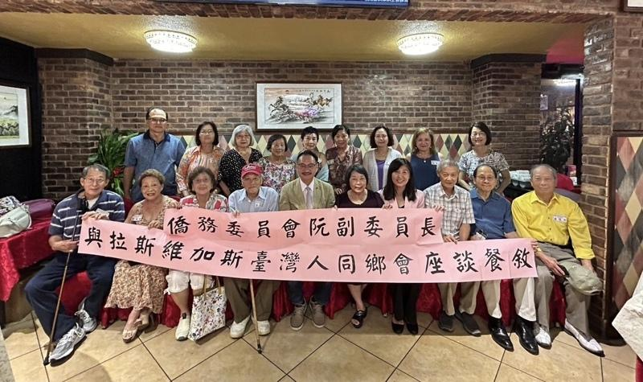

侨务委员会副委员长阮昭雄8月1日下午在拉斯维加斯展开各项拜会及座谈行程，当晚在金山湾区侨教中心主任庄雅淑陪同下，与拉斯维加斯台湾人同乡会餐叙并与拉斯维加斯台湾人同乡会会长、主要干部及代表进行意见交流，当天出席者包括拉斯维加斯台湾人同乡会会长张爱惠、副会长蔡美幼及理事代表。
阮昭雄表示，海外乡亲在侨居地深耕，不仅事业有成，也大力协助推动国民外交及文化交流，特别代表政府向乡亲长期支持台湾的心意，表达诚挚的敬意与谢意，台湾推动自由民主制度，一路走来虽然遇到许多困境与挫折，但海外乡亲始终秉持一份爱台湾的心，相挺台湾，令人感动。
隔日阮昭雄与庄雅淑前往拉斯维加斯台湾人同乡会所拜会，并与乡亲座谈，对同乡会凝聚台湾乡亲，宣扬台湾文化，在海外为台湾发声的热忱与精神，表达感佩。会中阮昭雄代表侨委会颁发侨务顾问聘书给张爱惠，庄雅淑也向侨胞说明侨委会i侨卡、侨务电子报及英语营等各项侨务服务消息。
位于内华达州的拉斯维加斯距离金山湾区九小时以上车程，当地侨胞近三万人，拉斯维加斯侨社对于阮昭雄来访，以及侨委会和金山湾区文教中心对当地关心深表感动。

侨务委员会副委员长阮昭雄、金山湾区侨教中心主任庄雅淑与拉斯维加斯台湾人同乡会餐叙合影。（主办单位提供）
侨务委员会副委员长阮昭雄8月1日下午在拉斯维加斯展开各项拜会及座谈行程，当晚在金山湾区侨教中心主任庄雅淑陪同下，与拉斯维加斯台湾人同乡会餐叙并与拉斯维加斯台湾人同乡会会长、主要干部及代表进行意见交流，当天出席者包括拉斯维加斯台湾人同乡会会长张爱惠、副会长蔡美幼及理事代表。
阮昭雄表示，海外乡亲在侨居地深耕，不仅事业有成，也大力协助推动国民外交及文化交流，特别代表政府向乡亲长期支持台湾的心意，表达诚挚的敬意与谢意，台湾推动自由民主制度，一路走来虽然遇到许多困境与挫折，但海外乡亲始终秉持一份爱台湾的心，相挺台湾，令人感动。
隔日阮昭雄与庄雅淑前往拉斯维加斯台湾人同乡会所拜会，并与乡亲座谈，对同乡会凝聚台湾乡亲，宣扬台湾文化，在海外为台湾发声的热忱与精神，表达感佩。会中阮昭雄代表侨委会颁发侨务顾问聘书给张爱惠，庄雅淑也向侨胞说明侨委会i侨卡、侨务电子报及英语营等各项侨务服务消息。
位于内华达州的拉斯维加斯距离金山湾区九小时以上车程，当地侨胞近三万人，拉斯维加斯侨社对于阮昭雄来访，以及侨委会和金山湾区文教中心对当地关心深表感动。